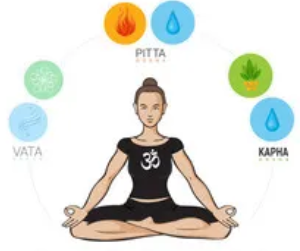
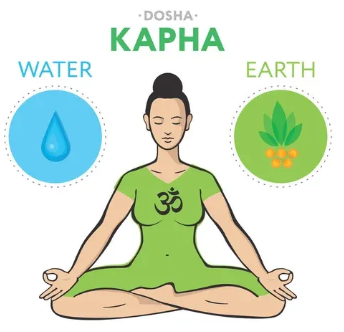
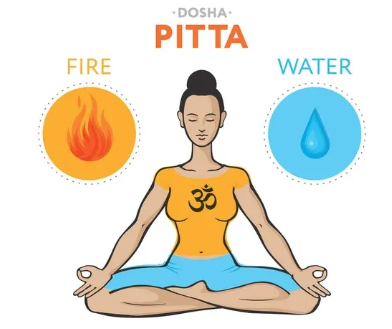
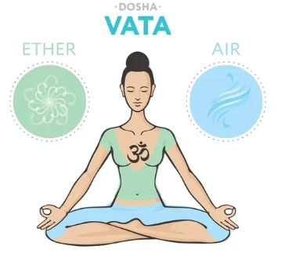

SUFFERING FROM TRIDOSHA??
TRIDOSHA

KAPHA DOSHA
Kapha dosha is the Ayurvedic mind-body element associated
with earth and water. It’s slow, moist, cool, oily, heavy, smooth, and steady in nature and embodies structure, lubrication, and stability in the mind and body.
Are you feeling sluggish and unmotivated lately? Do you crave sweets, gain weight just by looking at food, and have a hard time shedding pounds? If you answered yes to one or more of these questions, you might have a Kapha dosha imbalance—or, you might be a Kapha dosha mind-body type.
If you have a predominantly Kapha constitution, the qualities of Kapha (slow, steady, moist, smooth, oily, cool, heavy) will be expressed in your mind and body.

PITTA DOSHA
Pitta dosha is the Ayurvedic mind-body element associated with fire and water.
Do you often feel hot, irritable, or “hangry?” Is your skin sensitive or prone to breakouts, rashes, and irritation? Do you sometimes have excess stomach acid or trouble falling asleep at night? If some of these things sound familiar, you might have a Pitta dosha imbalance—or, you might be a fiery, passionate Pitta dosha mind-body type.
One of the foundational principles of Ayurveda is that “like increases like,” and opposites balance. Therefore, because Pitta dosha is hot, sharp, and oily in nature, it benefits from things that are cooling and soothing.

VATA DOSHA
Vata dosha is the Ayurvedic mind-body element associated with air and space. It’s light, cool, and dry in nature, and it governs all movement and processes in your mind and body—including processes like blood flow, elimination, breathing, and the movement of thoughts in your mind.
If you have a predominantly Vata constitution, the qualities of Vata dosha (light, cool, dry, quick) will be noticeably expressed in your mind and body. Your body is probably naturally thin and slender. Your hands and feet may tend to get cold easily, and your skin is cool and dry to the touch (especially in your extremities). Your sleep may sometimes be a bit elusive, or easily disturbed.

BODY TYPE OF DIFFERENT DOSHA
KAPPA BODY TYPE
The Kapha body type is earthy with the water element in it. This makes them grounded and more stable. These are powerful individuals and caring by nature. They not only get things done but help and support others too.
Common qualities of individuals with Kapha body constitution are:
- Caring in nature and showing empathy
- Trust others
- Calm, composed, and patient
- Wise and mature
- Happy
- Strong bones and joints
- Immunity is usually strong
The counter qualities of the Kapha Ayurveda body type are:
- Slow metabolism can make them sluggish
- They can end up gaining weight fas
- Tend to oversleep
- Prone to developing respiratory concerns
- Higher risk of heart diseases
- Need motivation or may get depressed
VATA BODY TYPE
Individuals with Vata body type have a predominant Vata Dosha with more qualities and characteristics of Vata. People with Ayurveda body type of Vata are usually slim and energetic. They are usually creative individuals and can think out of the box
Common qualities of individuals with vata body constitution are:
- Caring in nature and showing empathy
- Trust others
- Calm, composed, and patient
- Wise and mature
- Happy
- Strong bones and joints
- Immunity is usually strong
The counter qualities of the vata Ayurveda body type are:
- Slow metabolism can make them sluggish
- They can end up gaining weight fas
- Tend to oversleep
- Prone to developing respiratory concerns
- Higher risk of heart diseases
- Need motivation or may get depressed
PITTA BODY TYPE
The pitta type body has a combination of fire and water characters. These are athletic individuals who are usually well-built. They have good leadership abilities and may appear aggressive by nature and goal-oriented
Common qualities of individuals with pitta body constitution are:
- Caring in nature and showing empathy
- Trust others
- Calm, composed, and patient
- Wise and mature
- Happy
- Strong bones and joints
- Immunity is usually strong
The counter qualities of the pitta Ayurveda body type are:
- Slow metabolism can make them sluggish
- They can end up gaining weight fas
- Tend to oversleep
- Prone to developing respiratory concerns
- Higher risk of heart diseases
- Need motivation or may get depressed
Imbalance or Vitiation of the Doshas
When the Doshas are well balanced, it ensures good health. However, it is often possible that there would be vitiation in the Doshas, leading to an imbalance. There are various reasons for Dosha imbalance
Whatever the reason, when any of the Doshas get vitiated, it can disturb the state of harmony. This can directly impact health. Vitiation in any Dosha leads to excess Dosha that causes specific symptoms or health conditions. The disturbance caused is unique and may vary from one person to another. Let us see what vitiation in any of these Doshas would cause.
Effects of Vitiated khapa
Vitiation in the Pitta Dosha leads to inflammatory reactions within the body. This affects organs across the body.
On a mental level, the Pitta imbalance can lead to a negative state of mind, creating jealousy, frustration, anger, and a tendency to criticise others. Vitiation can affect digestion and it can lead to excessive hunger and thirst. Discoloration of skin and discoloration in the urine and stools can occur. It can also cause sleeplessness.
Exposure to hot weather, the heat of the sun, and hot food can aggravate Pitta. Sour, salty, and pungent foods worsen Pitta Dosha. Spicy food and potatoes can vitiate this Dosha
Effects of Vitiated Vata
Vitiation in the Pitta Dosha leads to inflammatory reactions within the body. This affects organs across the body.
On a mental level, the Pitta imbalance can lead to a negative state of mind, creating jealousy, frustration, anger, and a tendency to criticise others. Vitiation can affect digestion and it can lead to excessive hunger and thirst. Discoloration of skin and discoloration in the urine and stools can occur. It can also cause sleeplessness.
Exposure to hot weather, the heat of the sun, and hot food can aggravate Pitta. Sour, salty, and pungent foods worsen Pitta Dosha. Spicy food and potatoes can vitiate this Dosha
Effects of Vitiated Pitta
Vitiation in the Pitta Dosha leads to inflammatory reactions within the body. This affects organs across the body.
On a mental level, the Pitta imbalance can lead to a negative state of mind, creating jealousy, frustration, anger, and a tendency to criticise others. Vitiation can affect digestion and it can lead to excessive hunger and thirst. Discoloration of skin and discoloration in the urine and stools can occur. It can also cause sleeplessness.
Exposure to hot weather, the heat of the sun, and hot food can aggravate Pitta. Sour, salty, and pungent foods worsen Pitta Dosha. Spicy food and potatoes can vitiate this Dosha
How to Balance Vata, Pitta, Kapha?
Optimising Vata Dosha
The opposites of Vata are moist, warm, oily, and smooth.
To correct Vata vitiation, it’s advisable to prefer a warm and moist environment, not just physically but emotionally.
One can look for emotional comfort. Sweet fragrances and sweet music can also play a role in correcting this vitiation.
Apart from that, eat soft and warm food, such as cooked vegetables, berries, eggs, and dairy products. Use more sour, salt, and sweet tastes in the food.
Optimising Khapa Dosha
The opposites of Vata are moist, warm, oily, and smooth.
To correct Vata vitiation, it’s advisable to prefer a warm and moist environment, not just physically but emotionally.
One can look for emotional comfort. Sweet fragrances and sweet music can also play a role in correcting this vitiation.
Apart from that, eat soft and warm food, such as cooked vegetables, berries, eggs, and dairy products. Use more sour, salt, and sweet tastes in the food.
Optimising Pittha Dosha
The opposites of Vata are moist, warm, oily, and smooth.
To correct Vata vitiation, it’s advisable to prefer a warm and moist environment, not just physically but emotionally.
One can look for emotional comfort. Sweet fragrances and sweet music can also play a role in correcting this vitiation.
Apart from that, eat soft and warm food, such as cooked vegetables, berries, eggs, and dairy products. Use more sour, salt, and sweet tastes in the food.